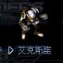

步兵單位中速度最快之一，升級也快，但裝甲偏弱。
| 名稱 | 技術等級 | 能量消耗 | 說明 |
|---|---|---|---|
| UCD 安瓿 | 16 | 200 KJ | 治療人類單位 |
| MCD 安瓿 | 16 | 200 KJ | 治療機械單位 |
| 隱形裝置 | 41 | 40 KJ | 使單位隱形 |
| 懸浮 | 27 | 25 KJ | 浮起避免踩到地雷（不推薦） |
| EMP槍 | 26 | 40 KJ | 消除敵人能量（對無敵坦克有效） |
| EMP波 | 46 | 65 KJ | 消除敵人能量（對無敵坦克有效） |
| EMP鉛槍 | 75 | 90 KJ | 消除敵人能量（對無敵坦克有效） |
| 微型治療 | 52 | 200 KJ | 治療機械單位 |
| 計時治療 | 52 | 200 KJ | 治療人類單位 |
| 名稱 | 技術等級 | 攻擊力 | 射程 | 射速 | 攻擊模式 |
|---|---|---|---|---|---|
| Light Vulcan | 1 | 22 | 15.0m | 0.8s | 地空 |
| G1-Vulcan | 9 | 30 | 15.0m | 0.8s | 地空 |
| V-Machine Gun | 23 | 35 | 15.0m | 0.8s | 地空 |
| SDI-Missile | 30 | 33 | 14.7m | 0.5s | 僅對空 |
| Pulse Gun | 121 | 100 | 14.85m | 0.8s | 地空 |
| ASSA Missile | 140 | 110 | 20.0m | 1.0s | 地空 |
完整武器列表請參考原站。資料來源：Ever☆Zone Tistory /111